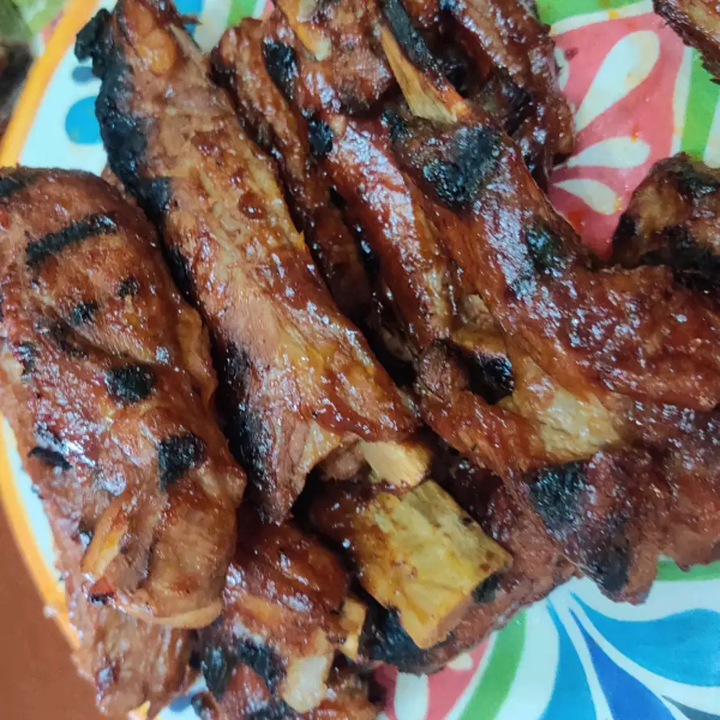

Description
882 calories; protein 36.4g; carbohydrates 94.1g; fat 38.3g; cholesterol 150mg; sodium 3517.8mg.
Extra tender, extra flavorful ribs, bursting with barbeque flavor.
Easily cook these great tasting ribs by following the steps here.
Ingredients
- 2 and 1/2 poinds pork spareribs
- 2 (18 ounce) bottles barbeque sauce
- 1 onion, quartered
- 1 teaspoon salt
- 1/2 teaspoon ground black pepper
Steps
- Place spareribs in a large stock pot with barbeque sauce, onion, salt, and pepper. Pour in enough water to cover. Bring to a low boil, and cook approximately 40 minutes.
- Preheat grill for high heat.
- Lightly oil grate. Remove spareribs from the stock pot, and place on the prepared grill. Use the barbeque sauce in the saucepan to baste ribs while cooking. Grill ribs, basting and turning frequently, for 20 minutes, or until nicely browned.